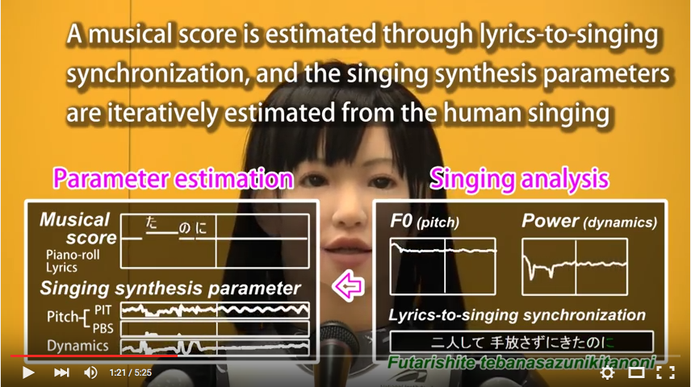
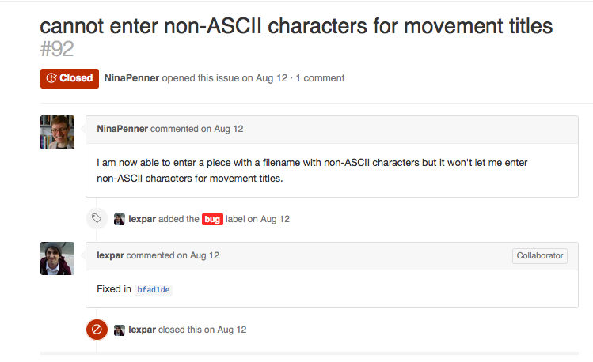
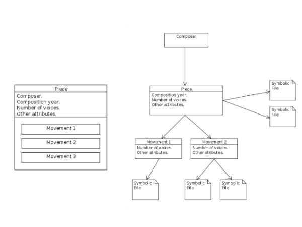
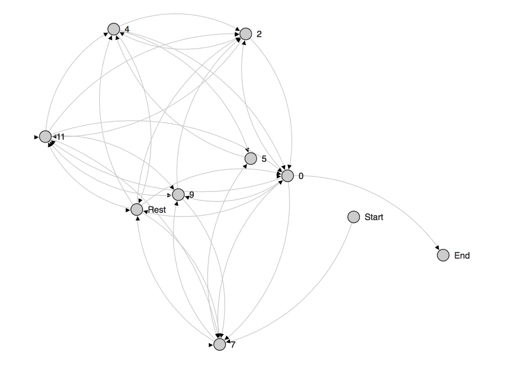
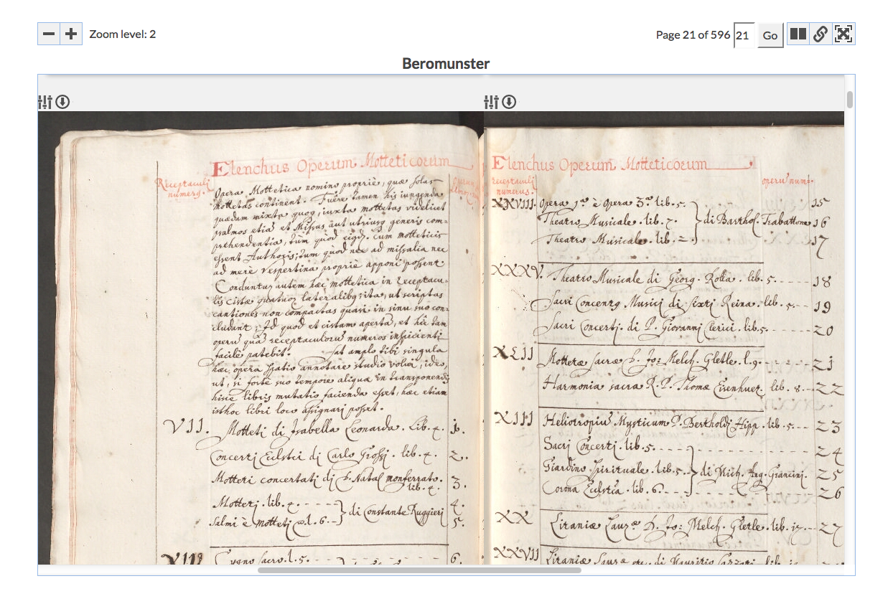

CIRMMT Workshop: Masataka Goto visits McGill
Posted by ehopkins on October 16, 2015
As part of CIRMMT’s Distinguished Lectures series, Masataka Goto visited McGill University. He gave a talk on Thursday afternoon, and the next day introduced the CIRMMT Workshop on usability and user experience for music information systems where many SIMSSA researchers and developers also presented.
Dr. Goto’s Thursday lecture on “Frontiers of Music technologies: Singing synthesis and active music listening” covered many different aspects of music technology, both in terms of music creation and appreciation. The music creation part included the singing synthesis system VocaListener, the robot singer system VocaWatcher (pictured below), and a discussion of the influence of singing synthesis superstar Hatsune Miku.
 Screenshot from VocaWatcher demonstration on Youtube
On the music appreciation side, we were introduced to Songle, an active music listening web service, and Songrium, oriented towards music browsing.
The next day, Dr. Goto introduced the CIRMMT Workshop on usability and user experience for music information systems. Since user interfaces are a huge part of what we work on at SIMSSA, several of our developers, researchers, and software testers had a chance to present on their work.
First, Nina Penner and I (Emily Hopkins) gave a presentation called “Musicologists on GitHub: User experience and the ELVIS Database.” We discussed our experience helping to test the ELVIS Database and demonstrated some of the new features we influenced as testers. We discussed learning to use GitHub to report issues that arose during testing, trying to bridge the gap between music researchers (who aren’t necessarily coders) and developers (who aren’t always music specialists).

Nina makes sure we can enter all the characters required for entering composer and piece names properly.
Next, Alex Parmentier offered the developer’s perspective on the the same project in “ELVIS database: Challenges in designing intuitive UI for crowd-sourced content.” In particular, he talked about some of the conceptual work that went into the most recent database changes, in particular how to manage the differences between our mental models of musical information (on the left) and how the database stores that same information (on the right).

Designing a good interface means bridging the gap between these models so that our users are able to understand and start using the database quickly and intuitively.
Later, Reiner Krämer showed us some of his recent research, inspired by searching the ELVIS database and imagining new ways of visualizing data in “Mapping Melodic Successions: Josquin’s Four-Voice Motets.” Drawing on Donald Knuth’s work in using state transition networks (STN) to map character relations in Les Misérables, Reiner is mapping melodic successions with an eye towards expanding the process to study voice leading. Here’s a screenshot of Josquin’s Ave maria…virgo serena, showing the melodic succession network for the soprano part.

The actual STN is visualized using D3.js, and is interactive: you can zoom in and out, and change the location of pitches. This visualization is very flexible, and can be extended to represent horizontal and vertical intervallic data and voice-leading procedures.
Other projects from our lab were featured, too, with presentations on the Cantus Ultimus project and Diva image viewer. William Bain talked about “Designing for usability in the Cantus Ultimus Project”, covering recent improvements to the interface for the Cantus website. Additionally, Evan Magoni talked about his work on our image viewer Diva (pictured below) in “Fitting manuscripts into the browser with Diva.js: Building an intuitive interface for exploring virtual documents”.

He compared several different models of online document viewers, including the Internet Archive, Early English Books Online, e-codices, and the Qatar Digital Library. He highlighted how these viewers compare with Diva, including some of Diva’s advantages and goals for the future. (Highlights of our most recent release were detailed in a previous post.)
In addition to the software development and testing team, information science researchers also contributed to the presentations. Ariane Legault-Vienne and Audrey Laplante, both from the École de bibliothéconomie et des sciences de l’information at the Université de Montréal, discussed an important interface for music research in “Searching for music materials in libraries: Discovery tools as seen through the eyes of users.” The final contribution was from David Weigl and Catherine Guastavino, “Applying the stratified model of relevance interactions to music information retrieval.” They surveyed existing literature to identify gaps in the research on different kinds of music information retrieval.
After the presentations, Masataka Goto led us in a round-table discussion of “Grand challenges in music research in the 21st century.” Great thanks to Masataka Goto and CIRMMT, and to all our presenters as well!